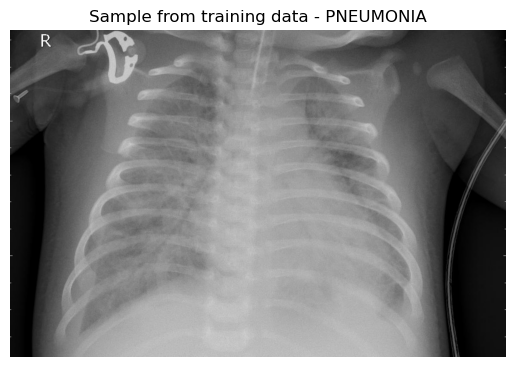
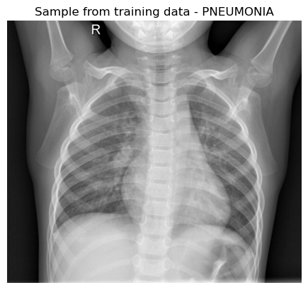

Plot examples from Dataset
[3]:
import os
from IPython import get_ipython
get_ipython().run_line_magic("matplotlib", "inline")
from IPython import get_ipython
get_ipython().run_line_magic("matplotlib", "inline")
import pathlib
import cv2
import matplotlib.pyplot as plt
from code_pn.project_globals import DATADIR
categories = ['train', 'val', 'test']
Show example of infected lung
[4]:
path = DATADIR / 'train' / 'PNEUMONIA'
sample_image = cv2.imread(os.path.join(path, os.listdir(path)[0]))
plt.imshow(cv2.cvtColor(sample_image, cv2.COLOR_BGR2RGB))
plt.title(f'Sample from training data - PNEUMONIA')
plt.axis('off')
plt.show()

Show example of healthy lung
[5]:
path = DATADIR / 'train' / 'NORMAL'
sample_image = cv2.imread(os.path.join(path, os.listdir(path)[0]))
plt.imshow(cv2.cvtColor(sample_image, cv2.COLOR_BGR2RGB))
plt.title(f'Sample from training data - PNEUMONIA')
plt.axis('off')
plt.show()
